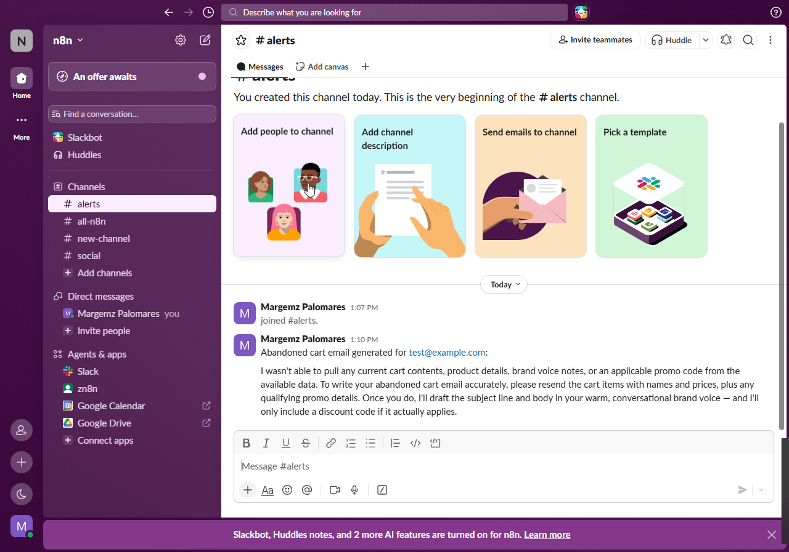
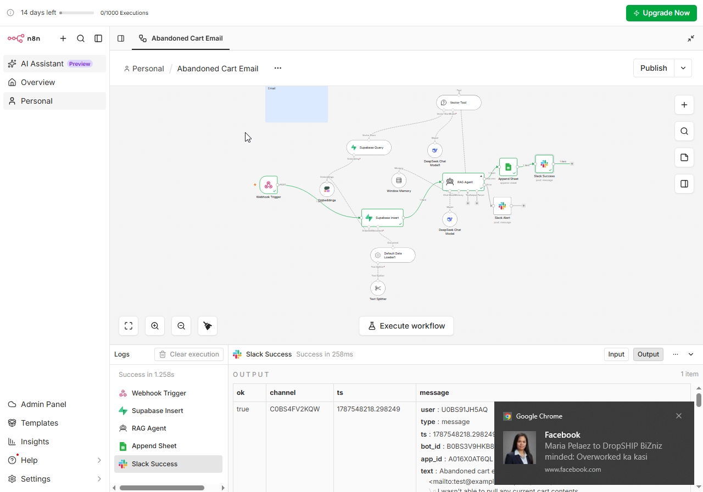
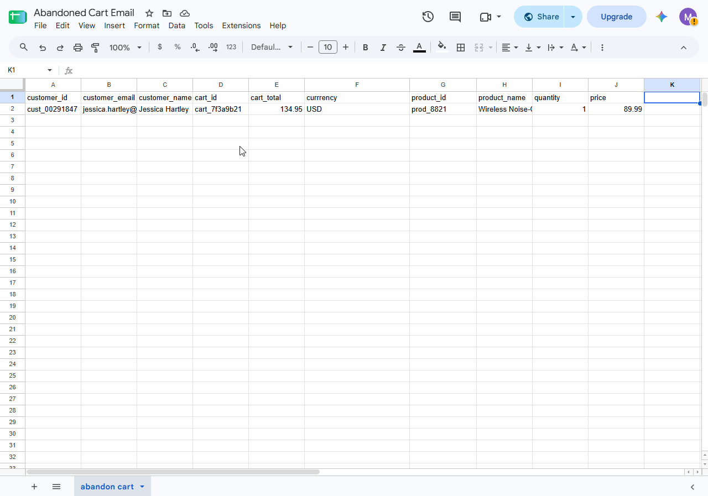
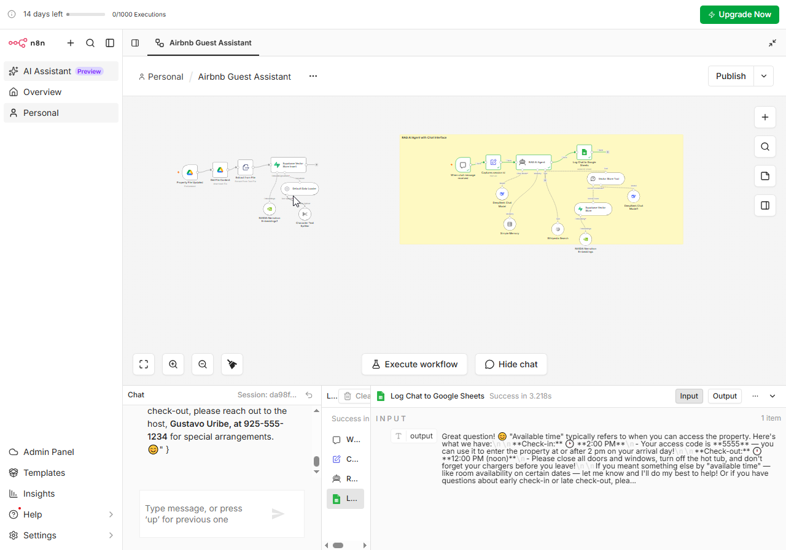
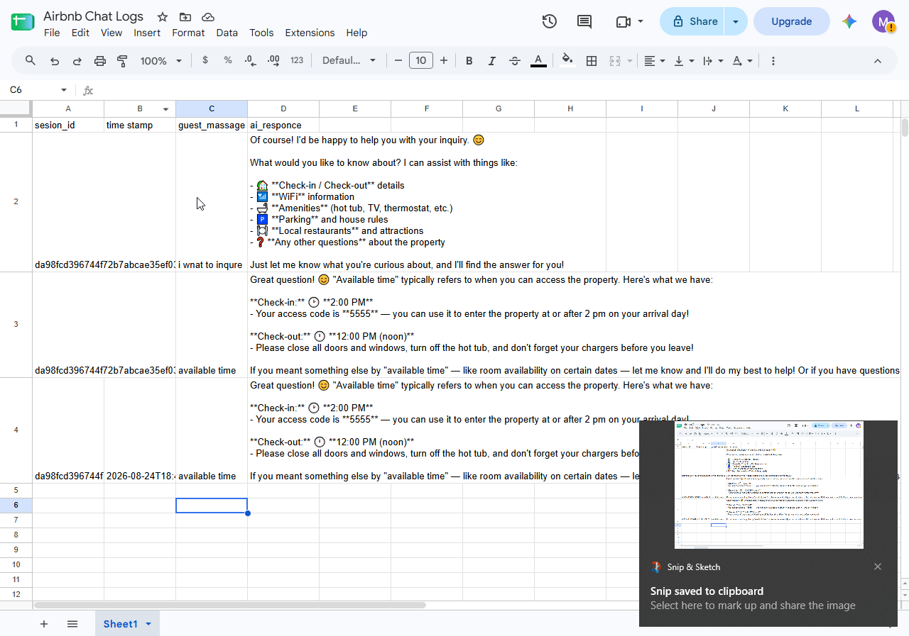

A practical n8n workflow that receives a new service-business enquiry, qualifies the lead, stores the record, alerts the team, and starts a personalized follow-up sequence.
< 5 minTarget first-response time
24/7Automated intake coverage
1 sourceCentralized lead record
Workflow overview
The sample demonstrates how n8n can connect forms, validation, CRM records, notifications, and follow-up actions in one observable workflow.
◉
Webhook
Receives a form submission from a landing page or ad funnel.
✦
Qualify
Checks service type, location, budget, and contact details.
▣
Record
Creates or updates the lead in the CRM and tags its source.
⌁
Notify
Sends a Slack or email alert when a high-intent lead arrives.
↗
Follow up
Starts a timed SMS/email sequence and logs each touchpoint.
Workflow evidence
Screenshots from the sample demonstrate the connected workspace, source data, and a completed n8n execution.

Slack alert channelInternal notification and response context.

Source dataStructured cart, customer, and product fields.

n8n executionWorkflow nodes, logs, and successful output.
What this sample covers
Input: structured webhook payload from a lead form
Logic: validation, branching, scoring, and duplicate checks
Operations: CRM update, internal notification, and follow-up trigger
Visibility: clear status fields for reporting and troubleshooting
Built for service businesses
This pattern can be adapted for junk removal, plumbing, HVAC, roofing, therapy, and other appointment-driven businesses.
Pair it with GHL, Zapier, Google Ads lead capture, or custom APIs to create a reliable full-funnel system.
A guest-facing AI assistant for short-term rentals. Two n8n pipelines keep property knowledge fresh and answer guests semantically — property-first, DeepSeek-powered, and fully logged.
1 · Knowledge Base Updater
Keeps property information up to date automatically.
Property File Updated (Google Drive) — polls every hour for changes to the property info document.
Get File Content — downloads the updated file from Google Drive.
Extract from File — pulls the plain text content out of the document.
Supabase Vector Store Insert — chunks text (500-char chunks, 50-char overlap) and stores NVIDIA Nemotron embeddings for semantic search.
2 · RAG AI Chat Agent
The guest-facing chatbot, powered by DeepSeek.
When chat message received — the public "FiFi" interface greets guests and accepts their messages.
Captures session id — tracks conversation context within the session.
RAG AI Agent — DeepSeek core with simple memory, a vector-store tool (always checked first), and Wikipedia fallback for general knowledge.
Log Chat to Google Sheets — session ID, guest message, AI reply, and timestamp logged after every response.

RAG workflow canvasTwo pipelines: knowledge base updater and AI chat agent.

FiFi guest chatProperty-first answers with amenities, check-in details, and safety guardrails.
Key behaviors
Property-first: the agent always checks the Supabase vector store before anything else.
Smart term matching: variations like "check in", "checkin", and "check-in" are treated identically.
Amenity links: responses for the hot tub, TV remote, or oven include direct instruction links.
Safety guardrails: declines inappropriate requests (extra guests, security info, personal host details) and directs emergencies to 911 or the host.
Full audit trail: every conversation is logged to Google Sheets for review.